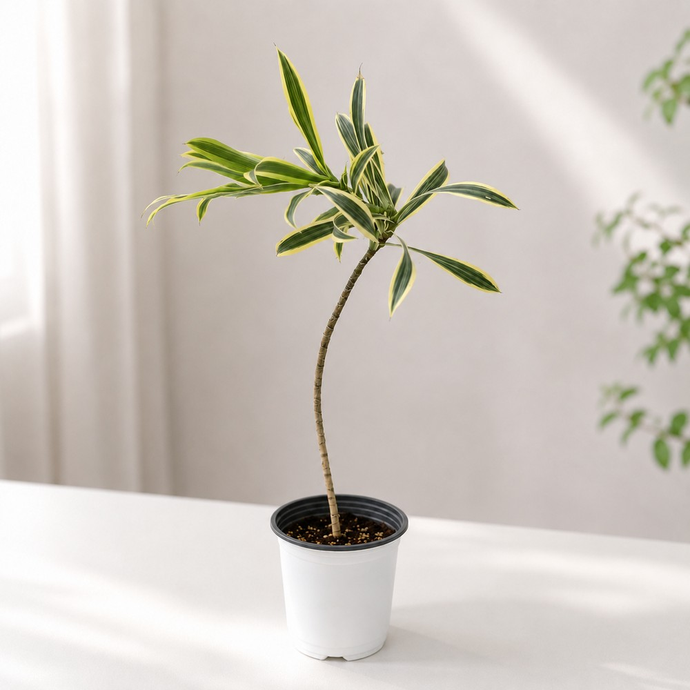
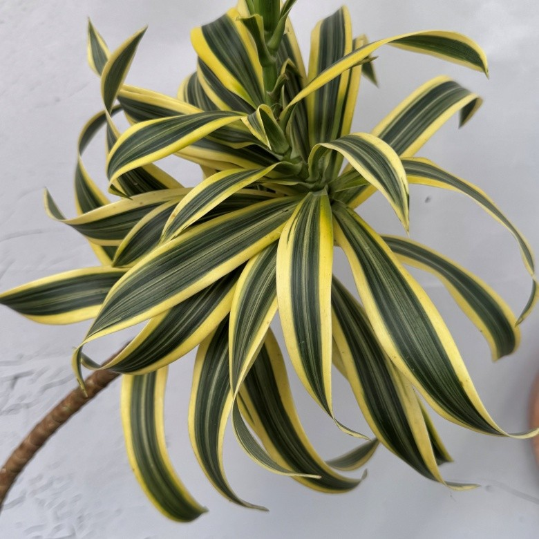
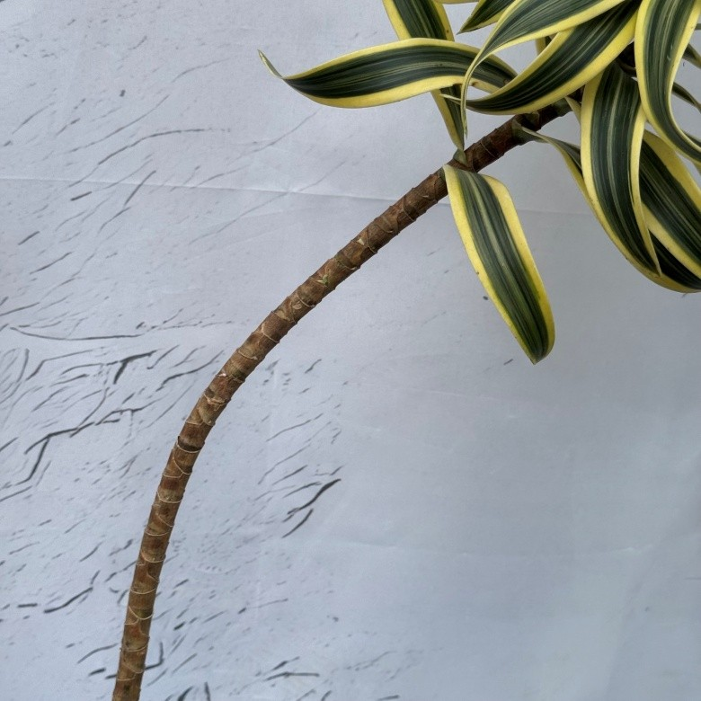

노란 잎 무늬와 부드러운 줄기 곡선이 돋보이는

짙은 초록 잎 가장자리에 노란 무늬가 들어간 송오브인디아입니다.
가늘고 자연스럽게 휘어진 줄기 위로 잎이 모여 있는 모습이 돋보입니다.
밝은 간접광이 드는 거실이나 창가 근처에 두고 무늬 잎을 감상해 보세요.





| 높이 | 50~55cm |
| 화분 지름 | 15cm |
| 구성 | 송오브인디아 1개 |
| 빛 | 밝은 간접광이 드는 곳에 두고, 강한 한낮의 직사광선은 피해 주세요. |
| 물 | 흙 상태를 확인해 윗부분이 마르기 시작하면 물을 주세요. 물이 고이지 않게 하고 겨울에는 물 주는 횟수를 줄여 주세요. |
| 온도 | 따뜻한 실내에서 기르고, 찬바람과 갑작스러운 온도 변화는 피해 주세요. |
| 통풍 | 공기가 부드럽게 흐르는 곳에 두고, 흙이 계속 축축하게 유지되지 않도록 관리해 주세요. |
식물 특성상 잎 무늬, 크기와 줄기의 굽은 정도는 개체마다 다를 수 있습니다.
사진에서 보이는 것처럼 일부 잎 끝에 갈변이 있을 수 있으니 사진을 확인해 주세요.
반려동물이 잎을 먹지 않도록 손이 닿지 않는 곳에 두어 주세요.